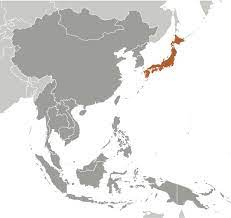

Geografia
Japonia este localizată în Asia de Est, în nordul Oceanului Pacific, fiind formată din 4 insule importante, ce reprezintă un procent de aproximativ 95% din teritoriul Japoniei: Honshu (227414 km2), Hokkaido (78411 km2), Kyushu (42600 km2) și Shikoku (17800 km2), plus numeroase insule mici.
Insulele nipone sunt formate la îmbinarea plăcilor tectonice: placa Pacificului și placa Filipinelor se scufundă sub placa Euroasiatică din vest. Japonia este situată deasupra zonei de scufundare, pe placa Eurasiatică. La îmbinarea plăcilor tectonice crusta pământului este instabilă, ceea ce explică numărul mare de vulcani din Japonia (50 activi și circa 200 inactivi) precum și numărul mare de cutremure (circa 1500 pe an). Cu toate acestea, se susține că aceste lucruri contribuie la frumusețea peisajului din Japonia. Izvoarele termale sunt larg răspândite, atât în zonele de munte, cât și în apropierea zonelor de țărm. Totuși, lava și cenușa rezultate în urma erupțiilor vulcanilor au avut, de-a lungul timpului, efecte dezastruoase asupra populațiilor care trăiesc în zona apropiată vulcanilor activi.
În cea mai mare parte arhipelagul are un relief muntos și colinar (peste 80%), de vârstă relativ recentă, în cadrul căruia se deosebesc regiuni formate în urma cutărilor terțiare și terțiar-cuaternare. 25 de vârfuri depășesc 3000 m, altitudinea maximă este Fuji Yama/Fuji-san 3776 m.
Flora
Flora din Hokkaido este caracterizată de păduri de conifere specifice zonei montane (brad, molid și larice), la altitudini mari, și de păduri de arbori nordici cu lemn de esență tare combinați, la altitudini mai joase. În Honshu, întâlnim o floră de tip temperat formată din: chiparos, pin umbrelă (coconar), brad hemlock (tsuga), tisă și pin alb. În zonele depresionare întâlnim stejarul și arborele de camfor și arbori de bambus. Insulele Shikoku și Kyushu sunt vestite pentru vegetația lor perenă. Trestia de zahăr și citricele se găsesc în zonele depresionare restrânse, arborii cu frunza lată la altitudini mai mari.
Vegetația se încadrează în subregiunea floristică chino-japoneză. Caracteristic pentru această zonă sunt pădurile temperate umede și cele umede subtropicale. Cele temperate sunt reprezentate prin păduri de conifere, de foioase etc, iar cele subtropicale prin magnolii, bambuși, liane, etc. Aproximativ 66% din suprafața Japoniei este acoperită de păduri.
Fauna
În Japonia sunt identificate în jur de 140 de specii de animale. Singura specie de primată este macacul japonez ce poate fi întâlnit și în nord. Există 32 de specii de carnivore, printre care: ursul brun, hermina, nurca, ratonul, vulpea, lupul, morsa și foca. În ape se găsesc crabi și creveți. Mari grupuri de pești migratori sunt direcționate spre Japonia de către Curentul Japoniei și Curentul Kuril. Speciile de insecte sunt variate și în număr mare. Aici trăiesc peste 250 de specii de păsări și 8 specii de reptile.
Fauna aparține subregiunilor euro-siberiană și chino-manciuriană (ursul japonez, maimuța japoneză, cocoșul japonez). Diversitatea și unicitatea peisajului arhipelagului japonez a determinat considerarea a numeroase regiuni drept parcuri naționale.
Clima
Japonia este situată la limita nord-estică a zonei climatice aflate sub influența musonului asiatic, care aduce o cantitate mare de precipitații pe teritoriul țării. Vremea are o dublă influență: una a sistemului climatic siberian și a doua, a tipului climatic din zona sudică a Pacificului. Clima este influențată de prezența Curentului Japoniei (Kuroshio), un curent cald iar nordul este dominat de Curentul Kuril (Oyashio), un curent rece, care acționează în estul insulei Hokkaido și la nord de Honshu. Zona intersecției celor doi curenți este una propice pescuitului. Curentul Tsushima, un braț al Curentului Japoniei, transportă apă caldă către nord, până în Marea Japoniei. Umiditatea este destul de ridicată tot timpul anului, cu precipitații ce variază, în medie, de la 1000 la peste 2500 mm. Temperatura medie variază de la 17°C, în porțiunile sudice, la 9°C, în extremitatea nordică. Hokkaido se confruntă cu ierni vitrege și îndelungate, în timp ce restul țării se bucură de vreme mai blândă în regiunile sudice, care au un climat subtropical. Zona Ryukyu este încălzită de prezența Curentului Japoniei și are un climat tropical. Shikoku și Kyushu au un climat subtropical. Sezonul taifunurilor începe din mai până în octombrie și de obicei, în fiecare an, câteva taifunuri, caracterizate de vânturi puternice și ploi abundente lovesc insulele.
Clima variază mult, de la temperată-rece în nord, cu ierni aspre, la subtropicală în sud.
Calamitati naturale
(taifunuri, vulcani, tsunami, cutremure)
La 11 martie 2011 în Pacific, nu departe de orașul Sendai de pe coasta de est a Japoniei, a avut loc cutremurul din Tōhoku (2011), un cutremur de magnitudinea 8,9, cel mai mare cutremur măsurat vreodată în Japonia. Seismul a fost urmat de un tsunami distrugător.